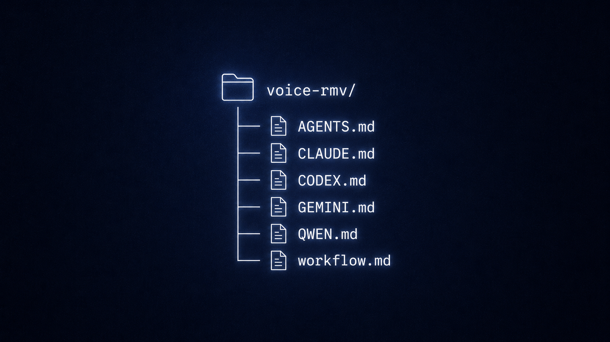
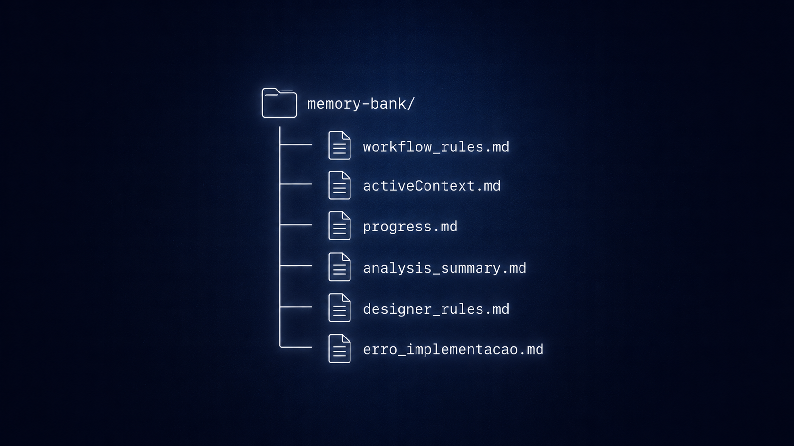
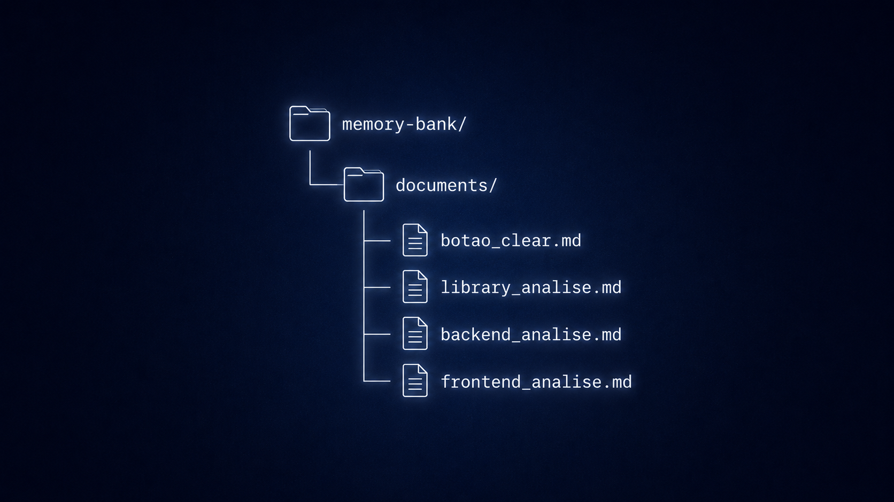
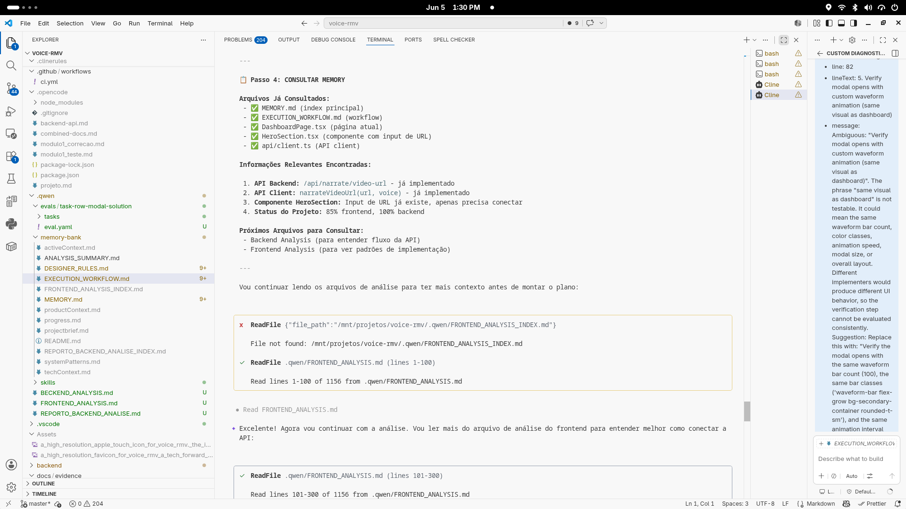
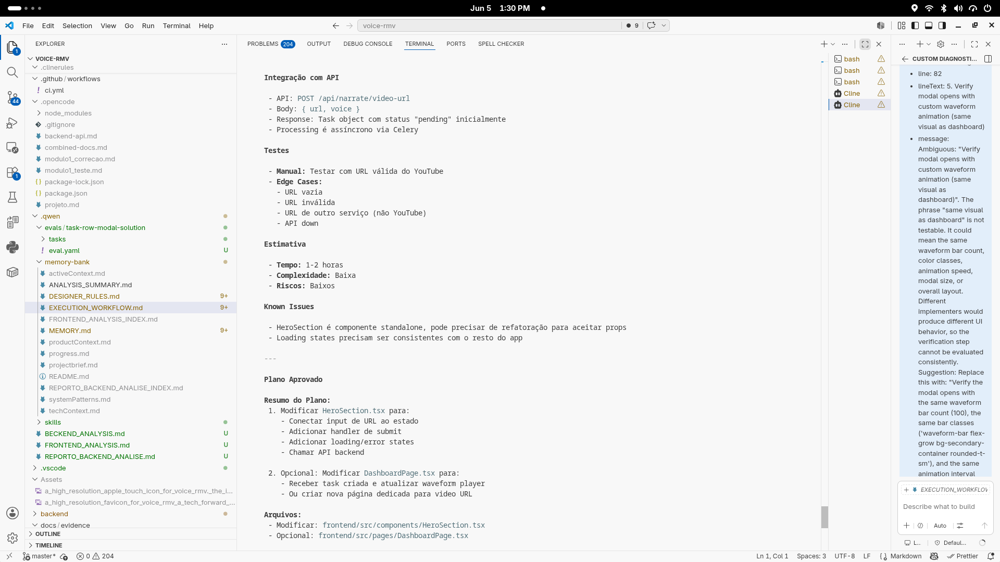
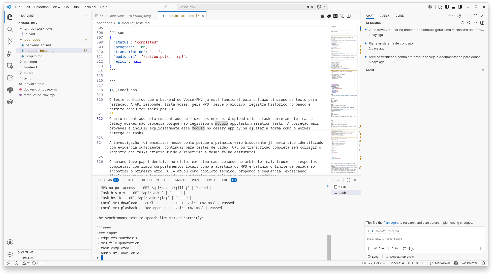

Memory Bank RMV: Architecture Thinking
Beyond the Context Window
Every complex project driven by AI eventually hits a wall: code fragmentation and long-context amnesia. The Memory Bank is not an execution tool; it is a structural governance framework designed to act as the permanent cognitive core of an operation, keeping AI agents aligned with architectural boundaries, workflow rules and past decisions across months of execution.
The Cost of LLM Amnesia in Real Operations
In 2025, I started building a platform to improve the visa documentation process. The first idea was simple: create a member area, automate part of the workflow and use AI to help generate the code.
At first, I tried to move fast using tools like WordPress, plugins and AI-assisted coding. But as the project grew, the same problem kept happening: the AI could help with isolated parts, but it would lose track of the full plan, the previous decisions, the business logic and the structure of the system.
But the momentum did not last.
A form, a checklist or a small implementation could take hours to fix because the AI did not remember why the system had been built a certain way. Sometimes the fastest path became starting over — again.
Later, I moved to a more robust stack with Python and React. The structure improved, the application became more stable, and the project finally reached production in January 2026. But the cost of getting there was high.
Because I was operating alone, every technical delay became a business delay. Time spent recovering lost context was time taken away from selling, serving clients and growing the operation. I lost speed, money, client momentum and business focus because the workflow depended too much on AI-assisted execution without persistent project memory.
Business need
A feature or fix is required.
AI-assisted execution
Model generates code and solutions.
Model loses context
Session resets or focus shifts.
Architecture decisions forgotten
Prior constraints are ignored.
Hours of rework
Same bugs, same fixes, same cost.
Business focus lost
Delivery slips, confidence drops.
Start over again
No memory, no progress.
AI was not the bottleneck because it could not generate.
AI became the bottleneck because it could not remember the operation.
Without a persistent project memory, AI acceleration turns into operational rework.
That is the problem the Memory Bank was created to solve.
From Scattered Prompts to a Shared Reference Point
After losing time, budget, and client momentum to repeated rework, I stepped back from active building to understand why.
At first, I thought the problem could be solved with a better model, a better tool, or a better prompt. But the pattern kept repeating: every new session created a risk of losing decisions, context, and execution logic.
So I started studying how AI models, coding assistants, and agent-based tools tried to preserve behavior across sessions. I reviewed documentation, rules files, agent configuration files, project-level instructions, and early skill patterns.
That is when the pattern became clear: the strongest systems were not depending only on the chat. They were using persistent reference files to guide the agent before execution.
Model Instruction Files
Reviewed how different models and platforms use structured instruction files — such as agent configuration files and project-level rule files (e.g., Qwen.md) — to guide behavior before a task begins.
Tool-Level Rule Patterns
Studied how coding assistant extensions like Cline use their own rule files to keep an AI agent consistent within a project's context and boundaries.
Skill File Patterns
Looked at how some agent setups let an AI pull in specific skills or instructions through separate files when needed. This pointed to the same idea: a project could have its own persistent reference material, not just a one-time conversation.
I built a simple structure: instead of explaining the project from scratch in every new chat or tool, each agent — whether Claude, Gemini, Codex, or another assistant — gets pointed to the same starting file.
That starting file leads to workflow.md.
workflow.md became the project's operational entry point. It holds the rules to follow, the current execution logic, the required validation steps, and the boundaries every agent must respect before moving forward. Every agent reads it first, so the project's logic does not depend on memory that resets between sessions.
The chat was temporary.
The workflow had to be permanent.
A Shared Reference Structure for AI-Assisted Work
Instead of relying on each chat to remember the project, I created a simple structure that gave every agent the same starting point, the same workflow logic and the same project memory before continuing the work.
Once I understood the pattern, the solution became clearer: I did not need to make every new chat remember everything by itself. I needed a shared reference structure that any agent could read before continuing the project.
As an AI Builder, I had to think beyond code generation. I needed to think about the development flow, the handoff between sessions, the way decisions were recorded, how risks could be reduced and how different agents could follow the same logic even when the model changed.
That is where workflow.md became important. It was not created to be just a documentation file. It became the starting reference for how the project should move: what the agent should understand first, what rules it should follow, when it should ask for approval, how changes should be validated and how progress should be registered.
But workflow.md alone was not enough. The project also needed supporting files: rules, active context, progress records and a simple way to keep decisions, bugs, validations and lessons learned available across sessions.
That is how Memory Bank RMV started to take shape.
A file became the difference between starting over and starting from where things were left.
The idea was practical: if I moved from Codex to Claude, Gemini or another assistant, the project should not lose its logic just because the chat changed. Each agent kept its own rule file, but the first instruction inside that file was always the same: check workflow.md before producing any output.
At that point, I asked Codex to help design the files with me. The surprising part was that once the files existed, Codex started following the structure we had defined. That was the proof of concept.
The Memory Bank did not make AI perfect. It made the work less dependent on temporary chat memory. The project now had a place to point the agent before the agent started acting.
Shared Starting Point
Every agent reads the same entry file before acting, regardless of the model or platform.
Workflow Logic
The execution flow, validation steps, and approval rules are documented and followed by every agent.
Project Memory
Decisions, bugs, validations, and lessons are stored in persistent files, not in chat history.
Cross-Agent Consistency
Switching between Codex, Claude, or Gemini does not reset the project's operational logic.
The transformation was not that the AI became smarter.
The transformation was that the project became easier for any agent to understand before continuing the work.
How the Memory Bank Was Organized
The Memory Bank RMV was designed as a shared reference structure. Different agents could enter the project, but they should not start from zero.

1. Shared Entry Point
Different AI agents could have different entry files, but they were all directed to the same workflow logic.
This reduced repeated explanations and gave each new session a consistent place to start.
├── AGENTS.md
├── CLAUDE.md
├── CODEX.md
├── GEMINI.md
├── QWEN.md
└── workflow.md
workflow.md became the shared entry reference — the file every agent was directed to read before continuing the work.
2. The Core Memory Structure
Keeps the working rules visible for the agents.
Shows what is active now and what needs attention.
Preserves validated progress and completed work.

Gives a fast consultation point for the project.
Keeps visual and interface consistency.
Records failed attempts and debugging history.
├── workflow_rules.md
├── activeContext.md
├── progress.md
├── analysis_summary.md
├── designer_rules.md
└── erro_implementacao.md
3. Dedicated Reference Documents
When a bug or implementation became complex, it received its own document.
This allowed the next agent to understand the issue, previous attempts, and reasoning before proposing a new change.
├── botao_clear.md
├── library_analise.md
├── backend_analise.md
└── frontend_analise.md
The project started preserving reasoning, not just results.

The structure was simple: give every new agent a place to start, a shared workflow to follow, and a memory of what the project had already learned.
From Project Memory to Execution Discipline
The Memory Bank was not valuable only because the files existed.
It became valuable because those files changed how each AI-assisted task started, moved and ended.
Instead of asking an agent to generate a solution immediately, the workflow created a repeatable path: understand the request, check the project memory, analyze viability, prepare a plan, wait for approval, execute inside the agreed scope, validate with the human and document the result.
This turned the Memory Bank from a folder structure into a working method.

1. The agent started by reading the project
Before planning the implementation, the agent had to consult the project memory.
In this example, the workflow led the agent to read the project memory, the execution workflow, the current dashboard files and the API client before proposing the next step.
The important point is simple: the agent did not start from a blank chat. It started from the project's existing context.
2. The plan came before execution
After reading the memory and analyzing the project, the agent did not jump directly into implementation.
It prepared a plan first.
The plan explained the objective, the current situation, the files that could be modified, the implementation path, the risks, the tests and the approval point before execution.
This mattered because the workflow created a pause between idea and action. The agent had to show what it intended to do before touching the project.


3. Human validation closed the loop
The workflow also kept the human inside the loop.
After the implementation, the result was not treated as complete just because the agent said it worked. The task still needed observable validation: API checks, task history, generated output, local file access and playback.
That made the process more reliable. The work did not end with code generation. It ended with evidence.
Memory Check
The agent had to read the project context before proposing changes.
Plan Before Action
The agent had to explain objective, scope, files, risks and validation before execution.
Human Approval
The implementation only moved forward after the plan was reviewed.
Evidence After Execution
The task was validated through real outputs, not only by the agent's claim.
The value was not only in having memory files.
The value was in making the agent use them before acting.
The Memory Bank gave the project a place to remember.
The workflow made that memory part of the work.
Skills learned and applied
The capabilities developed while designing and operating a project memory governance system.
System Architecture
Designing scalable documentation systems that persist across sessions without external dependencies.
AI Governance
Creating guardrails that keep AI agents aligned with project constraints and prior decisions.
Cognitive Architecture
Structuring information so both humans and AI agents can retrieve and act on it efficiently.
Human-in-the-loop
Designing review checkpoints before any change is committed to project memory.
Technical Documentation
Writing clear, structured documentation that serves as the single source of truth for the project.
Process Automation
Building routines that automatically sync project memory across sessions and agents.
Read AI Agent Interview
The Memory Bank was built alongside the Voice-RMV project. Below is an interview with the AI agent that was guided by it.
"Before the Memory Bank, every session felt like starting over. I would lose track of decisions made three conversations ago. The Memory Bank changed that — it gave me a persistent identity within the project. I could reference past decisions, avoid previously fixed bugs, and understand the architectural boundaries without being told again."
— AI Agent, Voice-RMV Project
The interview covers how the Memory Bank affected the agent's ability to maintain context, avoid regressions, and produce consistent code across months of development. It is a first-person account from the AI perspective, documenting the before-and-after of introducing structured project memory.
Full interview available in the project documentation.
Continue exploring
See how the Memory Bank was applied in a real content production workflow.
The Memory Bank was built to support the Voice-RMV project.
In that case study, you can see the visible product — the interface, the workflow, and the automation. The Memory Bank was the governance system behind it.
Voice-RMV case study
The content and voice workflow that the Memory Bank governed during development.
Read the Voice-RMV case study arrow_forwardDoes your AI project need a Memory Bank?
If you are building with AI and finding that context is lost between sessions, the Memory Bank is a pattern you can adopt.
It does not require a new tool, a new platform, or a new workflow. It requires discipline, structure, and the willingness to treat project memory as a first-class artifact.
I can help you design a Memory Bank for your project — tailored to your stack, your team, and your operational needs.